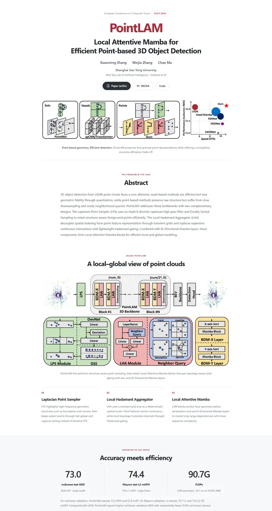

PointLAM: Local Attentive Mamba for Efficient Point-based 3D Object Detection
A clean conference handout with a crimson wax seal: one deep-red wordmark, tiny red kickers, and everything else in quiet graphite on white.

Checked against the rendered page. Two lower figures load lazily and are blank in the full-page capture. No navigation bar.
Why it is here
Crimson wordmark, small red kicker labels, generous whitespace, numbered three-column explanations and a large-figure results band. A polished academic style.
Overview
Color Palette
Typography
Segoe UI / system UI
PointLAM: Local Attentive Mamba for Efficient Point-based 3D Object De
Abstract · Method · Results · BibTeX — 0123456789
Consolas
PointLAM: Local Attentive Mamba for Efficient Point-based 3D Object De
Abstract · Method · Results · BibTeX — 0123456789
Spacing & Shape
Page Modules
Guidelines
More like this

CRAFT: Training-Free Cascaded Retrieval for Tabular QA
A tidy product manual in pale blueprint blue, where every stage wears its own colored edge.

Efficient Self-Evaluation for Diffusion Language Models via Sequence Regeneration
A tidy stack of rounded cards washed in a blue-violet-apricot dawn, signed with a gradient wordmark.

FIGMA: Towards FIne-Grained Music retrievAl
A music journal on warm paper: a heavy Newsreader headline under a red kicker, big red serif numerals for the results, and figures resting in soft cream frames.

GuideDog: A Real-World Egocentric Multimodal Dataset for Blind and Low-Vision Accessibility-Aware Guidance
A quiet monograph page: one serif column, oxblood ink for the links, and a table that blushes only at its own row.

LaMI: Augmenting Large Language Models via Late Multi-Image Fusion
A careful conference handout: Noto Serif headings, navy outlined buttons and soft grey bands taking turns.

PairCoder++: Pair Programming as a Universal Paradigm for Verified Code-Driven Multimodal and Structured-Artifact Generation
A crisp white product page: a blue announcement strip, ink-black pill buttons and every figure on a soft-shadowed card.